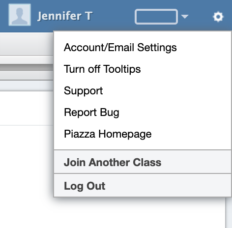

Milestone 2
A. Problem Definition
Our problem of study focuses on the common issues that new or less-experienced users experience when interacting with Piazza on a day to day basis and how it negatively affects productivity when used both in and out of the classroom. Primarily, Piazza presents the user with flawed signifiers across its entire site, which causes users to miss an affordance of the system or causes the user to perceive an affordance that the system does not allow for. The “Norman Door” effect created by this incongruence causes a user to have to go through the seven stages of action several times before accomplishing the task. This is a major problem for the usability of Piazza, especially with inexperienced users or in constrained environments, such as a classroom. Particularly, the incongruence of signifiers and affordances throughout Piazza’s service can directly interrupt the workflow of students and lead to frustration. This can further lead to student’s minimizing their interaction post-instruction, which is an overall negative given the tool is generally used for further discussion outside the classroom.
To further illustrate this point, I will use the seven stages of interaction in the context of a new user to outline one of the most basic interactions used in Piazza: posting a comment.
- Goal: The user has the goal of posting a comment on another post.
- Plan: The user is going to write the post and then find and click a button to submit the post
- Specify: The user looks to the bottom to find signifiers for a “post” button, but, because the “post” button does not conform to the typical system images users are used to and is written in the form of a sentence (“post as *user name*”) with a uniform coloration, they are likely to misinterpret the post button.
- Perform: The user looks around for a post button with more obvious signifiers. Unable to do so they may try pressing a more obvious button or refresh the page.
- Perceive: The user sees the comment remains unposted.
- Interpret: The user is frustrated or confused that they were unable to find the button on their initial interaction.
- Compare: The user having failed the task, re-attempts it.
Representative Examples of Design Fails
Posting

The post button is styled as a hyperlink, as is "as" which is, in-fact, not an interactable element. These are extremly bad signifiers since they are actively counter to basic web design guidelines and how the rest of the web (especially good websites) are designed as a whole. It violates Shneiderman et al.'s golden rule of consistency.
Notifications
This single post preview contains three different types of notifications in one place. This information overload is uninformative feedback and is not very useful to the user in the end. To add insult to injury, there is no form of notification in Piazza for when someone replies specifically to your own post.
Settings
The settings gear in the top right of a website is a mainstay of modern web design and is an excellent inclusion in the website. However, it contains extranious elements and elements that are not settings. The rectangle to the left of the settings wheel has absolutly zero signifiers as to its function and turns out to be a dropdown to change the color of the header (and the color of various page elements, but it is very inconsistent). This most certainly belongs under the settings tab itself.
Navigation
The navigation area of Piazza contains several design fails. The primary issue is falsely communicated affordances. The blue folder and all options next to it are presented as folders when they are actually just search filters that get applied to the sidebar of posts. This is the exact same feature as the sorting options directly above the sidebar of posts, but presented as an entirely separate feature. The worst offender here is the button that collapses the side panel so that more of the forum posts can be seen. Not only is it tiny, it once again lacks design consistency, differing from all the other collapse / expand buttons on the website.
Urgency
A website should communicate the most important information clearly. This element violates the principle of informative feedback. Bright red is most commonly used to denote a serious error but is being used here in a standard context at the top of every single post.
Statistics
Once again in the realm of informative feedback, this is advanced information that is shown by default which most users have no use for.
Space
Piazza has a random-but-high chance of showing this pop-up dialogue asking for financial contributions. This is not a problem in and of itself, but there is no way to close the dialog. It takes up a good portion of the screen real estate making reading and interacting with the actual important information on the forums more difficult.
B. Analysis of Existing Solutions
Piazza’s primary issue lies in fundamental mis-alignment between its design and modern tried and true HCI design principles. In many different ways Piazza ignores common HCI principles such as Norman’s Principles of Good Design. Unfortunately, it is widely agreed that the best solution to poor UI design is to simply design it well from the beginning, using proper design heuristics to ensure your UI is usable from day 1. There are hundreds of comprehensive documents that outline strategies for human-centered design, but very few solutions that can offer improvements to poor UI designs without a full scale re-design of the system. However, there have been attempts to provide more accessibility and control over UI elements to users without being as costly and time consuming as a full redesign of a web interface.
One example of such service is the Font Changer Pro google chrome extension created by Tom Gray, which gives users the ability to change the font, size, and color of text on any given website. This offers a solution to the presentation of websites that may have poorly selected fonts or font size and instead puts the customizability into the hands of the user with a general solution. This is a useful step in widening the scope of a website's interactive system while requiring minimal effort on the parts of the users. This is especially helpful in the case of increasing accessibility for those affected with learning disabilities such as dyslexia, as it can allow the user to customize many of the troublesome aspects of presented text. The British Dyslexia Association provides guidelines for Creating a dyslexia friendly workplace on their website, in which they list “Readable font” and “Colour” as being two primary aspects of readability for Dyslexic individuals. Thus, being able to adjust these attributes using the Font Changer Pro extension is useful in the pursuit of enhancing HCI elements of a website.
However, this approach is limited in scope. For Piazza and many other websites, the flaws are more nuanced and are built into core elements that are too variable for many solutions to apply. In the case of our primary example in part A with the lack of signifiers in the button, we can see that the primary issue is minor, but present. The problem arises when this fundamental issue is expanded in scope to the entirety of the website. The flaws present in Piazza’s interface are numerous, but providing a solution to all these elements is an incredibly difficult task, as the scope is near limitless and subsequently the solution itself would be prone to feature creep. So, Font Changer Pro’s greatest weakness becomes a strong asset, as it is a focused and generally applicable solution to issues found in many websites.
The robustness of Font Changer Pro’s solution is shown in its relative popularity, with the google chrome extension boasting 100,000+ concurrent users. This number is likely due to the extensions ability to provide users the ability to enhance a website's interactive system in situations where it may be lacking, expanding how accessible a website is by making it more accessible. In Kara Pernice and Jakob Nielson’s research report Usability Guidelines for Accessible Web Design, they give guidelines on ways to make websites more accessible to users that use assistive technologies, while also giving guidelines that generally make websites more user-friendly. In the report, Pernice and Nielson give guidelines on “Presenting Text”. Here, similar to the article on Creating a dyslexia friendly workplace, they outline the importance of using high contrast colors and larger font sizes, both of which can be adjusted by Font Changer Pro.
C. Proposed Solution
We propose a chrome extension (or similar e.g. tampermonkey script, javascript-embedded bookmark, etc.) that injects css and limited javascript into the Piazza webpage and addresses the types of design issues outlined in section A. This extension would essentially operate similarly to Font Changer Pro, but operate exclusively on Piazza. A modern website DOM is exceedingly complicated, and often requires significant knowledge of the inner workings to modify in a meaningful--let alone beneficial--manner. This tradeoff of universal applicability allows us to significantly increase the quality of changes made by the extension since we can tailor it to the many intricacies of Piazza. Additionally, by pre-configuring our extension’s changes, the end-user doesn’t have to undertake the time consuming process of fiddling with complicated style-rules; our extension takes care of that, leading to a much better end user experience.
Piazza has an abundance of affordances and a horrible lack of signifiers. We can look to 10 Usability Heuristics for User Interface Design by the Nielson Norman Group discussed earlier for guidelines on resolving the problems with the website. We will be focusing on heuristics 4 and 8, "Consistency and Standards" and "Aesthetic and minimalist design" respectively. We will be adjusting the user inferface of Piazza by improving interface consistency, reducing the learnability of the website. We will also be simplifying the design of the website, stopping extraneous and unnecessary information from distracting the user.
With more time, our solution could be extended to be a library of premade “themes” for various common websites. An open community in which more advanced extension users would be able to create themes for websites and publish them to a centralized, open-source repository would facilitate the availability of simple and accessible improved experiences by the user base as a whole. A simple upvote / downvote system for themes would provide easy determination of whether these themes--and thereby the extension as a whole--successfully improve the human-computer interaction process.